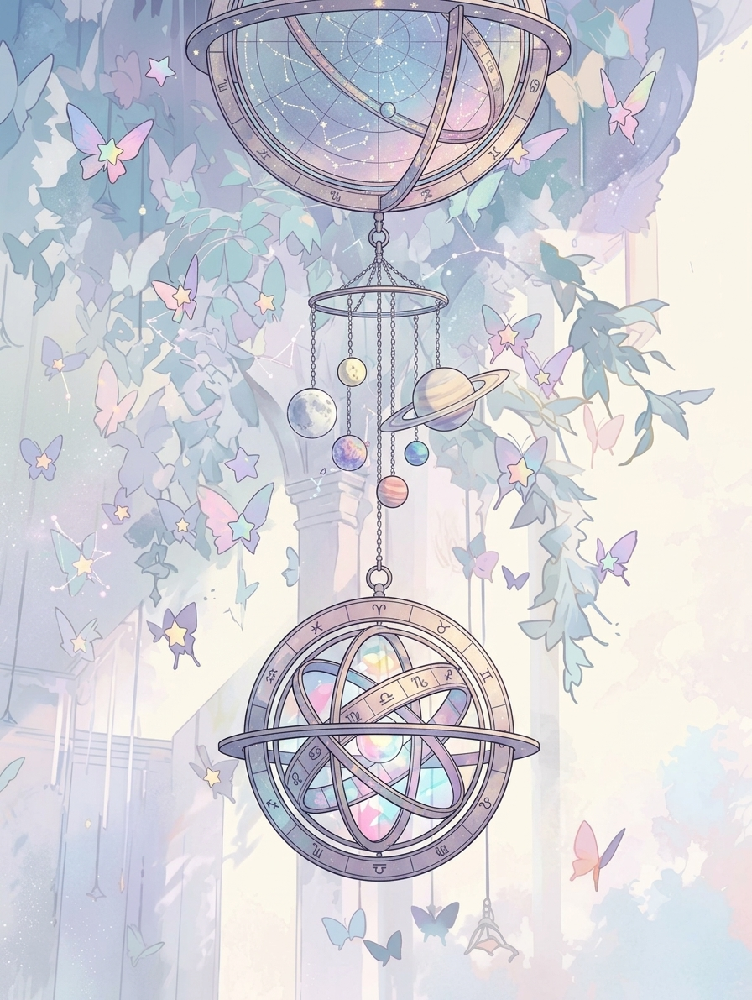

辞典
惑星・ハウス・アスペクトを検索。キーワード・意味・読み方のコツを詳しく確認できる。
クイズ
データから自動生成される4択クイズで星読みの知識を試そう。カテゴリを選んで10問チャレンジ。
メモ
天体・ハウス・アスペクトごとに自分の解釈やメモを保存。ブラウザに永続保存される。

惑星・ハウス・アスペクトを検索。キーワード・意味・読み方のコツを詳しく確認できる。
データから自動生成される4択クイズで星読みの知識を試そう。カテゴリを選んで10問チャレンジ。
天体・ハウス・アスペクトごとに自分の解釈やメモを保存。ブラウザに永続保存される。